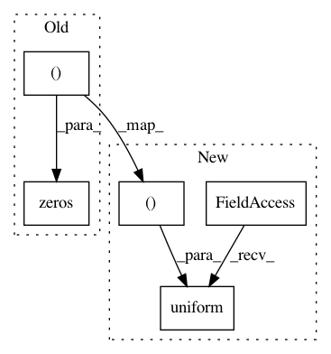

e125f807797c53ad3c8de16f9f25124671a0a0f6,tests/chainer_tests/links_tests/rnn_tests/test_link_n_step_rnn.py,TestInitialization,setUp,#TestInitialization#,428
Before Change
elif self.initializer == "zero":
initializer = initializers.constant.Zero()
self.initialW = numpy.zeros((10, 10), dtype=self.dtype)
self.initial_bias = numpy.zeros((10, 1), dtype=self.dtype)
initializer(self.initialW)
initializer(self.initial_bias)
After Change
elif self.initial_bias == "random":
bias_initializer = initializers.Uniform()
self.initialW = numpy.random.uniform(-1, 1, (10, 10)).astype(self.dtype)
self.initial_bias = numpy.random.uniform(-1, 1, 10).astype(self.dtype)
weight_initializer(self.initialW)
In pattern: SUPERPATTERN
Frequency: 3
Non-data size: 5
Instances
Project Name: chainer/chainer
Commit Name: e125f807797c53ad3c8de16f9f25124671a0a0f6
Time: 2019-12-10
Author: himkt@cookpad.com
File Name: tests/chainer_tests/links_tests/rnn_tests/test_link_n_step_rnn.py
Class Name: TestInitialization
Method Name: setUp
Project Name: dpressel/mead-baseline
Commit Name: 53a77648802dd6678d11a452c2992a547583ccf8
Time: 2018-10-02
Author: dpressel@gmail.com
File Name: python/baseline/tf/embeddings.py
Class Name: LookupTableEmbeddings
Method Name: __init__
Project Name: apache/incubator-mxnet
Commit Name: a37dcd46cba88dfd0478b601fb8fbf9b425780c0
Time: 2019-11-07
Author: anirudh2290@ufl.edu
File Name: example/automatic-mixed-precision/amp_model_conversion.py
Class Name:
Method Name: